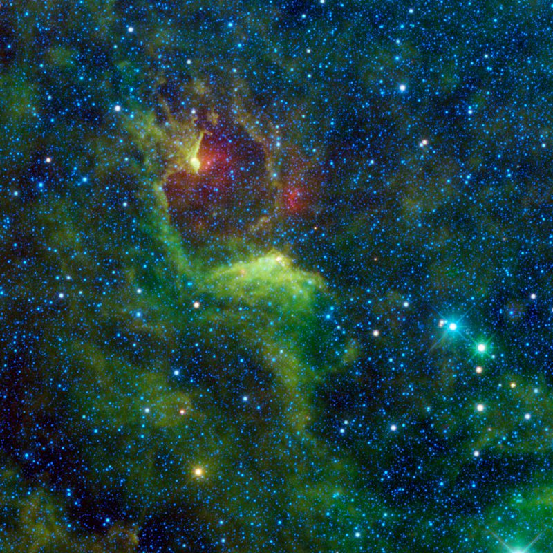

Crux
 Epsilon cru
Epsilon cru
十字架增一
十字架增一 (南十字座ε) 是南十字座中一顆光譜類型為K3III的4等星，在波多黎各它經常被稱為Intrometida (intrusive)。這顆恆星是橘色的巨星，距離地球228光年。
現代的遺贈
十字架增一是南十字座的五顆星之一，它出現在澳大利亞和巴布亞紐幾內亞的國旗上。它也是巴西國旗上26顆星星之一，每一顆代表一個州， 十字架增一代表的是聖埃斯皮里圖州。
圖一，十字架增一(ε Cru) cited in https://www.astrobin.com/354607/0/

圖二，在這張影像右側中間的藍白色亮星就是十字架增一。這張影響使用的是特殊波長的紅外線拍攝的，藍色對應的波長是3.4微米至4.6微米。